В современном искусстве
Калевала как источник вдохновения

Калевала оставила большой след во всех сферах искусства и стала большим вдохновением для писателей, скульпторов и даже музыкантов. Её отголоски видны даже на туристических маршрутах Выборга, Карелии
и Финляндии. Но обо всем по порядку.

СОВРЕМЕННАЯ ЛИТЕРАТУРА
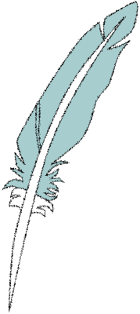
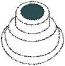
«Калевала» оставила яркий след в мировой литературе, став источником вдохновения как для традиционных писателей, так и для авторов графических романов
и комиксов.
ТОЛКИН - ИСТОРИЯ КУЛЛЕРВО
Эту меланхоличную и мрачную повесть Толкин написал ещё в студенческие годы, прямо вдохновившись одной из самых трагических рун «Калевалы» о судьбе сироты Куллерво. Именно этот карельский сюжет стал фундаментом для создания «Сильмариллиона» и всего мифа о Средиземье. Книга показывает, как древний карело-финский эпос породил современный жанр фэнтези.
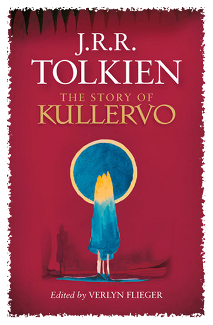
МАККОНЕН - КАЛЕВАЛА. ГРАФИЧЕСКИЙ РОМАН
Смелое и экспрессивное переосмысление эпоса от известного финского художника-комиксиста. Макконен перенес древние тексты Элиаса Лённрота в формат графического романа. Его мрачный, детализированный и временами пугающий визуальный стиль идеально передает первозданную, хтоническую магию карельских рун, делая их понятными новому поколению читателей.
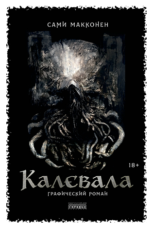
КУННАС - СОБАЧЬЯ КАЛЕВАЛА
Яркое, ироничное и невероятно популярное переосмысление эпоса, которое перевело сложный академический текст на язык понятных и добрых образов. Книга Маури Куннаса превратила суровых мифологических героев в харизматичных антропоморфных животных. Этот проект сделал «Калевалу» частью детского чтения по всему миру и доказал, что древний эпос может быть дружелюбным, живым и коммерчески успешным в массовой культуре.
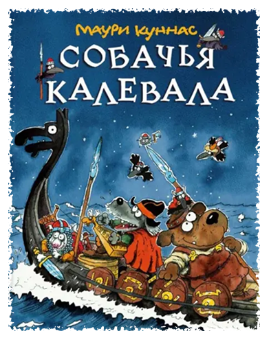
МУЗЫКА
К калевальским мотивам обращаются многие метал-группы из Финляндии, но также есть и российские исполнители, воспевающие карельскую магию.

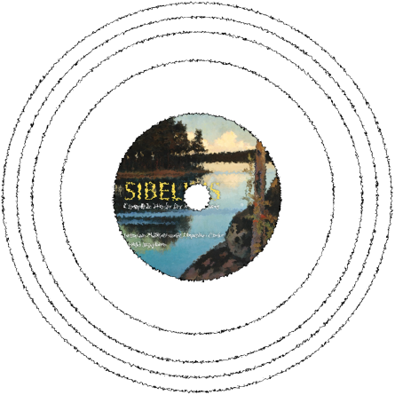
Ян Сибелиус
Классические композиции, основанные на сюжетах калевальского эпоса, известны во всем мире. Сибелиус посвятил Калевале всё своё творчество.

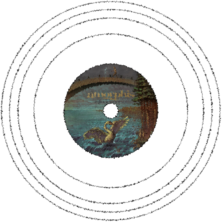
Amorphis
Финские мастера метал-сцены, которые сделали «Калевалу» основой своего тяжелого, но удивительно глубокого и мелодичного звучания.

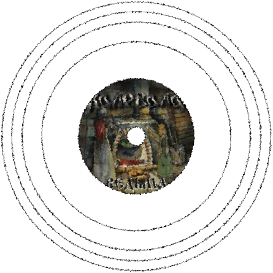
Калевала
Российская фолк-метал группа, названная в честь самого эпоса. В своем творчестве музыканты воспевают северную магию и старинные славяно-карельские легенды.

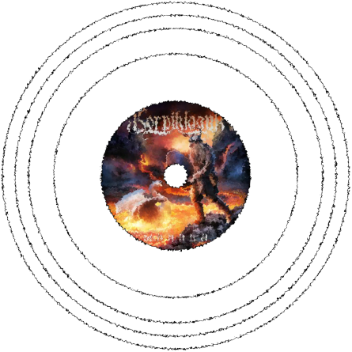
Korpiklaani
Знаменитый финский «лесной клан», который задорно переплетает тяжелый рок
с традиционными калевальскими напевами и игрой на йоухикко.
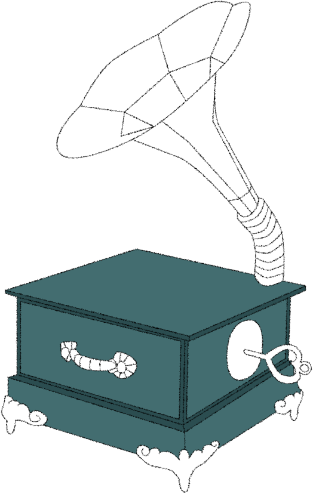
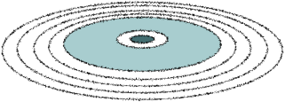
кинематограф
Сюжеты «Калевалы» оживали на экранах в самых разных жанрах — от масштабных советских сказок до сурового скандинавского артхауса.

Сампо
Масштабный советско-финский шедевр, поразивший зрителей спецэффектами. Визуализация ковки волшебной мельницы, хтоническая ведьма Лоухи и бескрайние карельские пейзажи заложили основу киновоплощения эпоса.

Железный век
Культовая финская экранизация, завоевавшая признание в Европе. Проект предложил абсолютно реалистичный, суровый и психологически глубокий взгляд на стародавних героев, лишенный привычной глянцевой сказочности.

Воин севера
Удивительный и смелый сплав «Калевалы» и китайских боевых искусств. Фильм связывает древний Китай и современную Финляндию, превращая миф о кузнеце Ильмаринене и ковке мельницы Сампо в масштабную интернациональную легенду.
СКУЛЬПТУРЫ И ПАМЯТНИКИ
"Калевала" также вдохновила множество скульпторов на создание великолепных памятников, объединяющих Карелию и Финляндию.
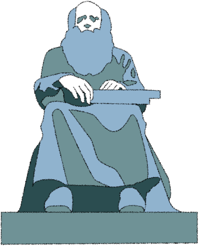
Сидящая на гранитном валуне фигура старца – дань памяти всем карельским сказителям, сохранившим до наших дней живой голос древнего эпоса. Прообразом для памятника послужил слепой рунопевец Петри Шемейкка.
Памятник рунопевцу. Альпо Сайло (1935 г.)
площадь Вяйнямёйнена, Сортавала, Карелия

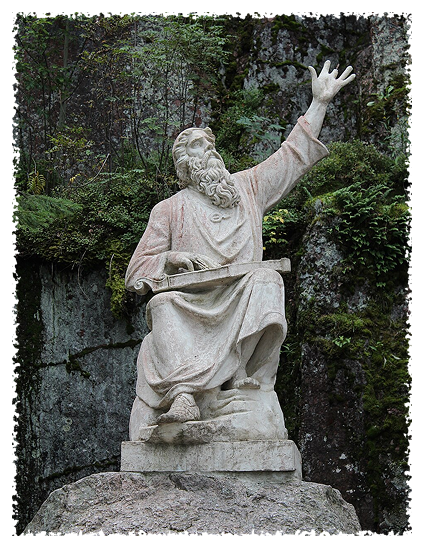
Первый в мире памятник герою «Калевалы», идеально вписанный в суровый пейзаж скального парка Монрепо. Главный волшебник эпоса, застывший прямо посреди карельских гранитов. Поя руны, держа на коленях кантеле, его фигура кажется естественным продолжением скалы, подчеркивая главную мысль эпоса: магия Вяйнямёйнена неразрывно связана с самой северной природой.
"Вяйнямёйнен, играющий на кантеле". Йоханнес Таканен (1873 г.)
парк Монрепо, Выборг, Ленинградская область
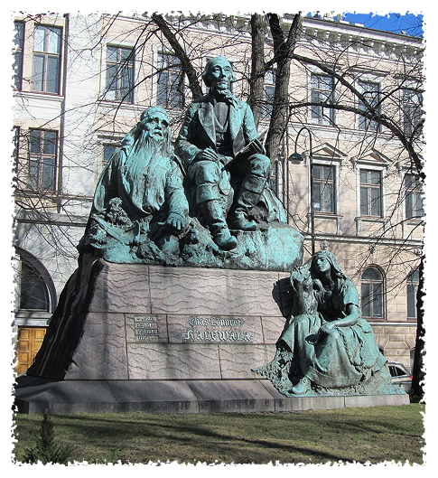
Монументальная композиция, связывающая собирателя фольклора с миром его героев. В центре композиции Лённрот записывает строки рун в свой походный блокнот. А у подножия его пьедестала предстают известнейшие персонажи произведений Лённрота: объятый думой Вяйнямёйнен и загадочная дева Импи, героиня "Кантелетар".
Памятник Элиасу Лённроту. Эмиль Викстрём (1902 г.)
парк Лённрота, Хельсинки, Финляндия
Существует в Карелии целая деревня, которая хранит память о путешествиях Элиаса Лённрота, о рунопевцах, которые пели ему руны, и о том, как эпос "Калевала" обрел свой нынешний, литературный вид.
Поселок Калевала (ранее Ухта) находится на севере Карелии. Отдалённая от столицы региона, Петрозаводска, она манит многих туристов своей труднодоступностью и первозданной северной природой, чего стоит только озеро Среднее Куйто.
Вся деревня – один большой памятник, но внутри неё есть одно примечательное дерево. "Сосна Лённрота", пожалуй, самый необычный памятник из всех представленных. Согласно преданиям, именно здесь рунопевцы пели свои руны, и именно здесь Лённрот собирал народные песни и былины, которые и стали "Калевалой".
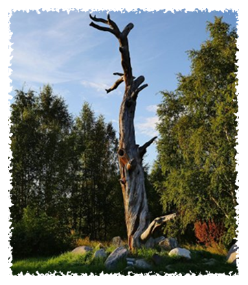